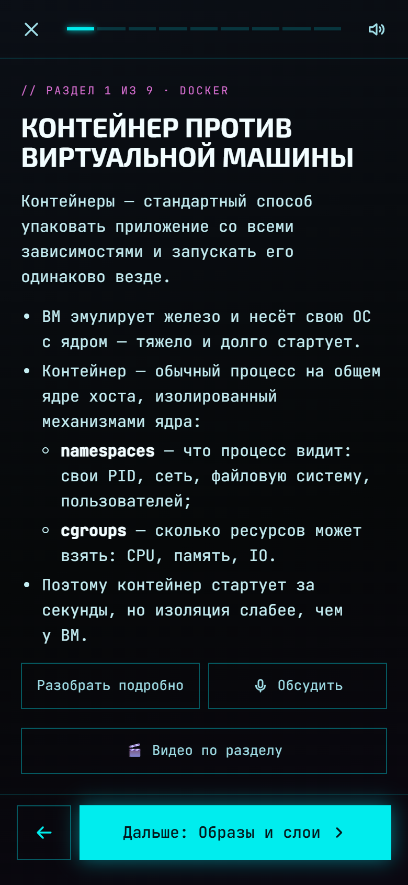
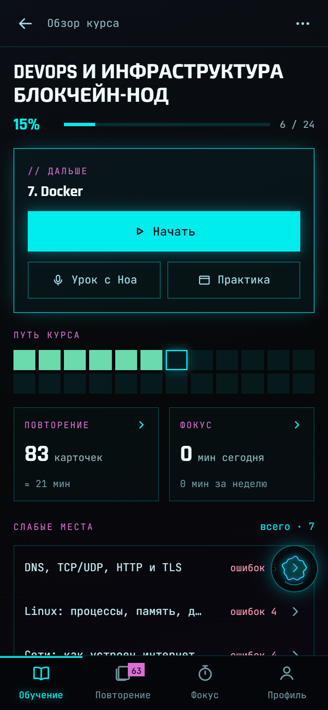
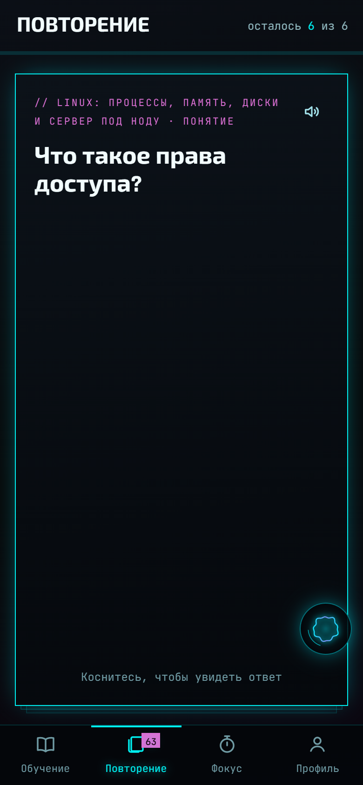
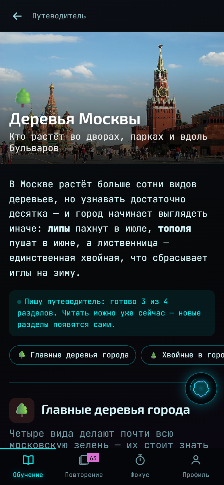
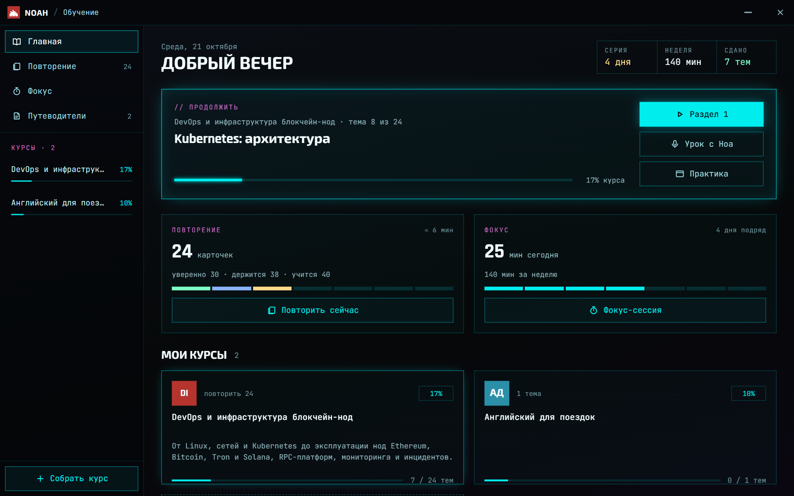

// входите в профессию
От основ до продакшена
DevOps, AI-инженер, аналитик: курс под вакансию — от Linux и сетей до того, о чём спросят на работе.
// учёба с ИИ-наставником
Скажите, чему хотите научиться и зачем. Ноа составит курс тема за темой — уроки, понятия, карточки, задачи и экзамен — и проведёт по нему: объяснит голосом, напомнит повторить, проверит.
Без установки. Курсы и прогресс — в аккаунте, на всех устройствах сразу.
// входите в профессию
DevOps, AI-инженер, аналитик: курс под вакансию — от Linux и сетей до того, о чём спросят на работе.
// готовитесь к собеседованию
Мини-экзамены по темам, финальный по курсу, разговор с Ноа как с интервьюером — и список того, что подтянуть.
// учите для себя
«Деревья Москвы», «Кофе от зерна до чашки», «Умный дом» — разделы, виды, цифры и картинки. Читать с интересом, без задач.
«Kubernetes с нуля до продакшена — чтобы пройти собеседование на DevOps». Пары фраз хватит.
План, потом каждая тема: урок разделами, понятия, карточки, задачи и мини-экзамен. Учиться можно с первой готовой темы.
После раздела — вспомнить одно понятие без подсказки: так оно держится вдвое лучше, чем после перечитывания.
Карточки возвращаются, когда пора: сегодня — то, что вот-вот забудется, остальное подождёт.
Задачи, экзамен по теме, финальный по курсу. На компьютере — практика в настоящем терминале на своём сервере.

// урок с ноа
Урок можно слушать: Ноа читает раздел вслух и делает паузы между шагами. Непонятно — «Разобрать подробно» разложит раздел по полочкам, «Обсудить» — разговор голосом, где можно перебивать и переспрашивать.
// ролики-схемы
Кнопка «Видео по разделу» — и Ноа собирает короткий ролик: блоки, стрелки, что куда идёт, и её голос поверх. Не пересказ текста, а картинка, которую трудно нарисовать словами. Этот ролик собран сам, по разделу курса про Kubernetes.

// обзор курса
Путь курса клетками: пройденные темы, текущая, впереди. Ниже — слабые места: темы, где ошибок больше всего, одной кнопкой к повторению.

// повторение
Понятия курса становятся карточками. Вспомнили — карточка уходит дальше, ошиблись — вернётся скоро. Ответ можно сказать вслух: Ноа сверит его с определением.

// путеводители
Тема словами — и Ноа собирает путеводитель: разделы, виды, цифры, советы, «а вы знали?» и картинки из Википедии. Читать можно, пока он дописывается; свой раздел — добавить просьбой.
// на компьютере
На компьютере учёба живёт в помощнике NOAH: тот же курс в большом окне, урок с Ноа голосом, практика в терминале на своём сервере и голосовые команды.

Сразу, без установки. Вход — через Telegram или Google.
ОткрытьИз России с мобильного — m.noahlab.ru/learn
Приложение «NOAH Учёба»: урок голосом, повторение, практика по SSH. Бета — файл .ipa.
Скачать бетуNOAH для Windows, macOS и Linux — учёба, голос и практика в терминале.
Скачать NOAHВаша. Мост к подписке Claude, ключ OpenRouter или локальная Ollama — что подключите. Ключ модели остаётся у вас: в браузере он не уходит на сервер.
Курс пишет модель — она может ошибиться. Поэтому Ноа сверяет ответы с уроком, просит не выдумывать цифры и названия, а сборку под учёбу ведёт моделью точнее той, что для разговора. Сомневаетесь — «Обсудить» и спросите прямо.
В вашем аккаунте на noahlab.ru: так их видят все ваши устройства. На телефоне и компьютере открытое читается и без сети.
Их собирает сервер, и сейчас — для аккаунтов с подключённым мостом к модели. Курсы, уроки, повторение и проверка работают с любой подключённой моделью.
Да: курс можно собрать через свою нейросеть по MCP — Claude, ChatGPT и другие отправляют его в аккаунт по ссылке, он появляется во всех приложениях.